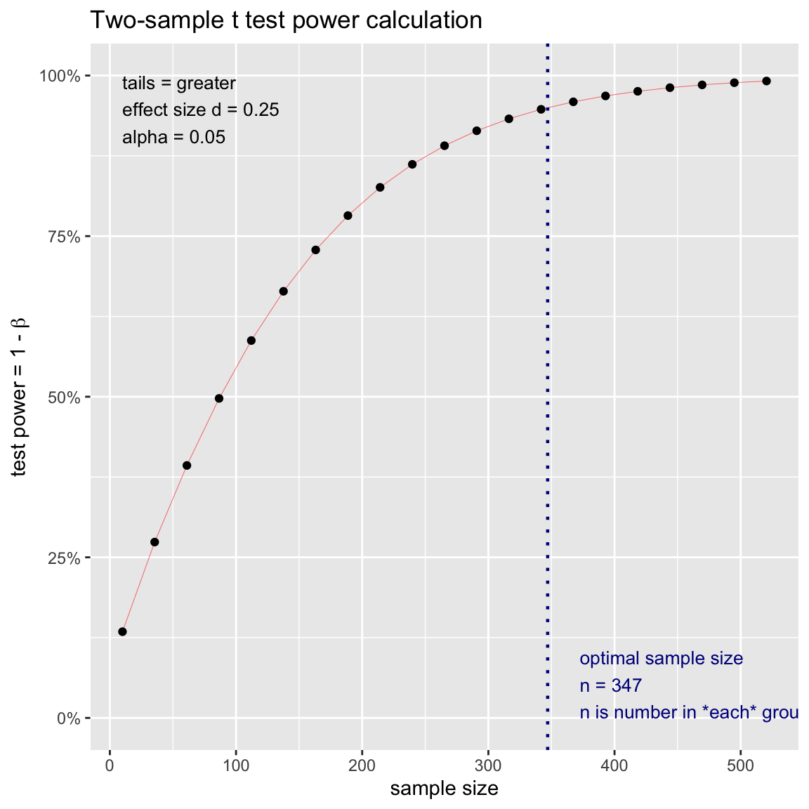

Neue Statistik
|
Statistik mit R The R Bootcamp |

|

Steven Tash as a psi-test subject in
Ghostbusters, from
imdb.com
Overview
“The term psi denotes anomalous processes of information or energy
transfer that are currently unexplained in terms of known physical or
biological mechanisms. Two variants of psi are precognition (conscious
cognitive awareness) and premonition (affective apprehension) of a
future event that could not otherwise be anticipated through any known
inferential process.”
Daryl J. Bem, professor emeritus, Cornell
University
In diesem Practical, analysierst du die Daten von Daryl Bem`s berüchtigter Studie über menschliche psi-Fähigkeieten und übst währendessen neue und neu-erlangten Statistikfähigkeiten.
Am Ende des Practicals wirst du wissen…
- Wie du p-Hacking betreibst.
- Wie du sample sizes bestimmst.
- Wie du Konfidenzintervalle berechnest.
- Wie du Bayesianische Statistiken rechnest.
Aufgaben
A - Setup
Öffne dein
TheRBootcampR project. Es sollte die Ordner1_Dataund2_Codeenthalten. Stelle sicher, dass du alle Datensätze, welche imDatensätzeTab aufgelistet sind, in deinem1_DataOrdner hast.Öffne ein neues R Skript. Schreibe deinen Namen, das Datum und “Neue Statistik Practical” als Kommentare an den Anfang des Skripts.
## NAME
## DATUM
## Neue Statistik PracticalSpeichere das neue Skript unter dem Namen
neue_statistik_practical.Rim2_CodeOrdner.Lade die nötigen Pakete. Siehe unten.
# Lade die nötigen Pakete
library(tidyverse)
library(pwr)
library(rstanarm)Loading required package: RcppThis is rstanarm version 2.21.1- See https://mc-stan.org/rstanarm/articles/priors for changes to default priors!- Default priors may change, so it's safest to specify priors, even if equivalent to the defaults.- For execution on a local, multicore CPU with excess RAM we recommend calling options(mc.cores = parallel::detectCores())library(BayesFactor)Loading required package: codaLoading required package: Matrix
Attaching package: 'Matrix'The following objects are masked from 'package:tidyr':
expand, pack, unpack************
Welcome to BayesFactor 0.9.12-4.2. If you have questions, please contact Richard Morey (richarddmorey@gmail.com).
Type BFManual() to open the manual.
************- Verwende die
read_csv()Funktion umpsi1, die Daten des ersten Experiments, einzulesen.
# Lade die Daten
psi1 <- read_csv(file = "1_Data/psi_exp1.csv")Printe den Datensatz.
Verwende
names(XX),summary(XX), undView(XX)um einen weiteren Überblick über die Daten zu bekommen.Wiederum, führe den Code unten aus um sicherzustellen, dass alle
characterVariablen als Faktoren vorliegen, was den statistischen Modellen hilft kategoriale Variablen richtig zu interpretieren.
# Konvertiere alle character zu factor
psi1 <- psi1 %>% mutate_if(is.character, factor)B - p(si)-Hacking
- Versuche den kleinstmöglichen p-Wert durch das fortwährende
Massieren Bem’s experimenteller Daten zu extrahieren. Finde dafür bis zu
drei Analysen, die zeigen, dass a) Menschen psi-Fähigkeiten
besitzen, d.h., dass die
Trefferratesignifikant höher als Chance ist und b) dass es andere Variablen gibt die psi-Fähigkeiten signifikant vorhersagen, was ebenso ein Beleg für die Existenz solcher Fähigkeiten wäre. Es gibt keine Regeln, ausser dassTrefferrateals Kriterium zu wählen ist. Du kannst jeden möglichen Test verwenden. Dir ist es auch erlaubt nur Komponenten der Daten mitdata %>% filter(condition)auszuwählen.
C - Poweranalyse
- Bem’s erste Analyse in seinem Paper ist, ob
Trefferrategrösser ist als50%. Für diese Bedingung (Bedingung == 'erotic') hat Bem eine durchschnittliche Trefferrate von53.13%beobachtet. Bestimme für Experiment 1, welcher Cohen’s d Wert der Abweichung von3.13%-Punkte von der Trefferrate unter H0 (50%), entspricht. Benutze das Template.
# Extrahiere die Trefferraten für erotic
Trefferrate_erotic <- psi1 %>% filter(Bedingung == "erotic") %>% pull(Trefferrate)
# Berechne die Abweichung von H0
Trefferrate_erotic_delta <- mean(XX) - 50
# Berechne d
d <- Trefferrate_erotic_delta / sd(XX)# Extrahiere die Trefferraten für erotic
Trefferrate_erotic <- psi1 %>% filter(Bedingung == "erotic") %>% pull(Trefferrate)
# Berechne die Abweichung von H0
Trefferrate_erotic_delta <- mean(Trefferrate_erotic) - 50
# Berechne d
d <- Trefferrate_erotic_delta / sd(Trefferrate_erotic)- Ein Cohen’s d von
.25wird allgemein als klein, aber bedeutsam angesehen. Nimm nun die Perspektive eines rivalisierenden Forschers ein, der Bem’s Effekt vond = .25in einer neuen Studie mit einer Falsch-Positiv-Rate von \(\alpha = .05\) einer hohen Power von \(power = 1-\beta = .95\) replizieren möchte. Welche Stichprobengrösse wäre nötig? Verwende das Template.
# N um d=.25, alpha = .05, power = .95
stichprobe <- pwr.t.test(d = XX,
sig.level = XX,
power = XX,
alternative = "greater")
stichprobe# N um d=.25, alpha = .05, power = .95
stichprobe <- pwr.t.test(d = .25,
sig.level = .05,
power = .95,
alternative = "greater")
stichprobe
Two-sample t test power calculation
n = 347
d = 0.25
sig.level = 0.05
power = 0.95
alternative = greater
NOTE: n is number in *each* group- Laut Poweranalyse wäre eine Stichprobe von 347 Individuen nötig.
Versuche dies einmal mit der
plot.power.htest()-Funktion zu visualisieren. Wende sie einfach auf dasstichprobe-Objekt an.
# Stichprobe-Visualisierung
plot.power.htest(stichprobe) 
- Mittels des Plots kannst du nun auch evaluieren, wie gross die Power
von Bem’s ursprünglicher Studie war. In Bem’s
'erotic'condition waren 100 Beobachtungen. Finde den entsprechenden Punkt auf der x-Achse und gehe dann nach oben um die dazugehörige Power zu finden. Alternativ kannst du nochmals diepwr.t.test()Funktion verwenden und anstattpowerdie Stichprobengrössendefinieren. Siehe Template.
# Bems post-hoc power
power <- pwr.t.test(n = XX,
d = .25,
sig.level = .05,
alternative = "greater")
power# Bems post-hoc power
power <- pwr.t.test(n = length(Trefferrate_erotic),
d = .25,
sig.level = .05,
alternative = "greater")
power
Two-sample t test power calculation
n = 100
d = 0.25
sig.level = 0.05
power = 0.547
alternative = greater
NOTE: n is number in *each* group- Die letzte Analyse, das bestimmen der Power für einen gegebenen
Effekt und Stichprobengrösse nennt man eine Post-hoc Poweranalyse,
welche nicht mit einer eigentlichen Poweranalyse verwechselt werden
darf. In Bem’s Fall war die Power
.547, das heisst, dass Bem nur ungefähr eine 50/50 Chance hatte einen Effekt von der gefundenen Stärke zu beobachten. Überprüfe nun was gewesen wäre, wenn der Effekt klein gewesen wäre, d.h.,d = .1. Wiederhole die Powerberechnung für Bem’s Stichprobengrösse und berechne die Stichprobengrösse die nötig ist für einepower = 1-\beta = .95.
# Bems post-hoc power
power <- pwr.t.test(n = length(Trefferrate_erotic),
d = .1,
sig.level = .05,
alternative = "greater")
power
Two-sample t test power calculation
n = 100
d = 0.1
sig.level = 0.05
power = 0.174
alternative = greater
NOTE: n is number in *each* group# Sample
stichprobe <- pwr.t.test(d = .1,
sig.level = .05,
power = .95,
alternative = "greater")
stichprobe
Two-sample t test power calculation
n = 2165
d = 0.1
sig.level = 0.05
power = 0.95
alternative = greater
NOTE: n is number in *each* group- Für einen kleinen Effekt, welchen man vielleicht höchstens erwarten
würde für etwas so ungewöhnliches wie menschliche
psi-Fähigkeiten, hatte Bem’s Studie nur eine power von
17.4%und die Stichprobe die für eine hohe power notwendig war lag oberhalb von 2000 Personen. Das bedeutet, dass Bem entweder wusste, dass er einen grösseren Effekt beobachten würde oder, dass er eher schlechte Studienplanung betrieben hat.
D - Konfidenzintervalle
- Konfidenzintervalle sind ein anderer Weg Signifikanztests
durchzuführen, welcher eher auf Schätzung als auf Testung von Effekten
beruht. Die grundlegende Idee ist, dass man die Schätzgrössen (z.B.
Regressionsgewichte) nicht durch den Standardfehler teilt, sondern den
Standardfehler verwendet um eine Spannweite um die Schätzgrössen
aufzuspannen. Rechnen wir zunächst einen
t.test()für abhängigen Stichproben fürpsi1, welcher dieTrefferratefür die beidenBedingungen vergleicht.
# t.test
psi_ttest <- t.test(XX ~ XX, data = XX, paired = TRUE)
# Testergebnisse
psi_ttest# t.test
psi_ttest <- t.test(Trefferrate ~ Bedingung, data = psi1, paired = TRUE)
# Testergebnisse
psi_ttest
Paired t-test
data: Trefferrate by Bedingung
t = -2, df = 99, p-value = 0.07
alternative hypothesis: true difference in means is not equal to 0
95 percent confidence interval:
-6.839 0.228
sample estimates:
mean of the differences
-3.31 - Extrahiere nun das Konfidenzintervalle für den t-Test.
# Konfidenzintrval
psi_ttest$conf.int[1] -6.839 0.228
attr(,"conf.level")
[1] 0.95- Das Konfidenezinterval für den Unterschied liegt zwischen zwischen
-6.84und.23. Das Konfidenzintervalle enthält also die Null. Das heisst, dass obgleich der Mittelwert für die Erotic-Bedingung signifikant von50%verschieden ist die beiden Bedingungen sich nicht signifikant unterscheiden. Beginne nun das Konfidenzintervall für den Unterschied der Gruppen nachzubauen. Extrahiere dafür zunächst den Unterschied, den entsprechenden Standardfehler, und die Freiheitsgrade.
# Gewicht b und Standardfehler se
delta <- psi_ttest$estimate
se <- psi_ttest$stderr
df <- psi_ttest$parameter- Jetzt benötigst du nur noch die entsprechenden t-Werte um das Konfidenzintervall aufzuspannen. Da das Konfidenzintervall in beide Richtungen zu gleichen Teilen aufgespannt werden soll suchen wir nicht den t-Wert für \(1-\alpha\) sondern für \(1-\frac{\alpha}{2}\) und \(\frac{\alpha}{2}\), d.h., wir suchen die kritischen t-Werte für einen zweiseitigen Test mit \(\alpha = .05\). Verwende das Template.
# Kritische t-Werte
t_25 <- qt(p = XX, df = XX)
t_97.5 <- qt(p = XX, df = XX)# Kritische t-Werte
t_.25 <- qt(p = .025, df = df)
t_97.5 <- qt(p = .975, df = df)- Schaue dir zunächst die beiden t-Werte an. Überrascht, dass
es die selben Werte sind nur einmal positiv und einmal negativ? Das
ergibt sich daraus, dass die t-Verteilung symmetrisch um Null liegt. Um
nun damit das Konfidenzintervall zu berechnen verwende das Template
unten. Es geht darum
t*senach oben undt*senach unten vom Unterschieddeltazu gehen. Denk an die unterschiedlichen Vorzeichen der beiden t-Werte.
# confidence limits
delta_lower <- XX + XX * XX
delta_upper <- XX + XX * XX# confidence limits
delta_lower <- delta + t_.25 * se
delta_upper <- delta + t_97.5 * seJetzt kannst du das Konfidenzintervall mit dem aus dem t-Wert vergleichen. Ist es identisch?
Probiere andere Konfidenzintervalle aus. Wie verändern sich dei Grenzen, wenn \(\alpha = .01\) oder \(\alpha = .1\), d.h., wenn die Konfidenzintervalle 99% bzw. 90% umspannen?
E - Bayesianische Statistik
- Bayesianische Statistik kann in R mittlerweile ebenso leicht
verwendet werden, wie klassische (frequentistische) Statistik durch
Pakete wie
rstanarmundBayesfactor. Beide Pakete erlauben dir beinahe identisch zur bekannten Form Modelle zu implementieren, die jedoch einer ganz anderen statistischen Philosophie. Verwenderstanarmim Template um die Trefferrate durchGeschlechtundStimulus_seekingfür die'erotic'Bedingung vorherzusagen.
# Bayesianische Regression
Trefferrate_bm <- stan_glm(formula = Trefferrate ~ Geschlecht + Stimulus_seeking,
data = psi1 %>% filter(Bedingung == 'erotic'))
SAMPLING FOR MODEL 'continuous' NOW (CHAIN 1).
Chain 1:
Chain 1: Gradient evaluation took 0.000592 seconds
Chain 1: 1000 transitions using 10 leapfrog steps per transition would take 5.92 seconds.
Chain 1: Adjust your expectations accordingly!
Chain 1:
Chain 1:
Chain 1: Iteration: 1 / 2000 [ 0%] (Warmup)
Chain 1: Iteration: 200 / 2000 [ 10%] (Warmup)
Chain 1: Iteration: 400 / 2000 [ 20%] (Warmup)
Chain 1: Iteration: 600 / 2000 [ 30%] (Warmup)
Chain 1: Iteration: 800 / 2000 [ 40%] (Warmup)
Chain 1: Iteration: 1000 / 2000 [ 50%] (Warmup)
Chain 1: Iteration: 1001 / 2000 [ 50%] (Sampling)
Chain 1: Iteration: 1200 / 2000 [ 60%] (Sampling)
Chain 1: Iteration: 1400 / 2000 [ 70%] (Sampling)
Chain 1: Iteration: 1600 / 2000 [ 80%] (Sampling)
Chain 1: Iteration: 1800 / 2000 [ 90%] (Sampling)
Chain 1: Iteration: 2000 / 2000 [100%] (Sampling)
Chain 1:
Chain 1: Elapsed Time: 0.048909 seconds (Warm-up)
Chain 1: 0.05169 seconds (Sampling)
Chain 1: 0.100599 seconds (Total)
Chain 1:
SAMPLING FOR MODEL 'continuous' NOW (CHAIN 2).
Chain 2:
Chain 2: Gradient evaluation took 2.6e-05 seconds
Chain 2: 1000 transitions using 10 leapfrog steps per transition would take 0.26 seconds.
Chain 2: Adjust your expectations accordingly!
Chain 2:
Chain 2:
Chain 2: Iteration: 1 / 2000 [ 0%] (Warmup)
Chain 2: Iteration: 200 / 2000 [ 10%] (Warmup)
Chain 2: Iteration: 400 / 2000 [ 20%] (Warmup)
Chain 2: Iteration: 600 / 2000 [ 30%] (Warmup)
Chain 2: Iteration: 800 / 2000 [ 40%] (Warmup)
Chain 2: Iteration: 1000 / 2000 [ 50%] (Warmup)
Chain 2: Iteration: 1001 / 2000 [ 50%] (Sampling)
Chain 2: Iteration: 1200 / 2000 [ 60%] (Sampling)
Chain 2: Iteration: 1400 / 2000 [ 70%] (Sampling)
Chain 2: Iteration: 1600 / 2000 [ 80%] (Sampling)
Chain 2: Iteration: 1800 / 2000 [ 90%] (Sampling)
Chain 2: Iteration: 2000 / 2000 [100%] (Sampling)
Chain 2:
Chain 2: Elapsed Time: 0.062597 seconds (Warm-up)
Chain 2: 0.053107 seconds (Sampling)
Chain 2: 0.115704 seconds (Total)
Chain 2:
SAMPLING FOR MODEL 'continuous' NOW (CHAIN 3).
Chain 3:
Chain 3: Gradient evaluation took 2.2e-05 seconds
Chain 3: 1000 transitions using 10 leapfrog steps per transition would take 0.22 seconds.
Chain 3: Adjust your expectations accordingly!
Chain 3:
Chain 3:
Chain 3: Iteration: 1 / 2000 [ 0%] (Warmup)
Chain 3: Iteration: 200 / 2000 [ 10%] (Warmup)
Chain 3: Iteration: 400 / 2000 [ 20%] (Warmup)
Chain 3: Iteration: 600 / 2000 [ 30%] (Warmup)
Chain 3: Iteration: 800 / 2000 [ 40%] (Warmup)
Chain 3: Iteration: 1000 / 2000 [ 50%] (Warmup)
Chain 3: Iteration: 1001 / 2000 [ 50%] (Sampling)
Chain 3: Iteration: 1200 / 2000 [ 60%] (Sampling)
Chain 3: Iteration: 1400 / 2000 [ 70%] (Sampling)
Chain 3: Iteration: 1600 / 2000 [ 80%] (Sampling)
Chain 3: Iteration: 1800 / 2000 [ 90%] (Sampling)
Chain 3: Iteration: 2000 / 2000 [100%] (Sampling)
Chain 3:
Chain 3: Elapsed Time: 0.045849 seconds (Warm-up)
Chain 3: 0.041927 seconds (Sampling)
Chain 3: 0.087776 seconds (Total)
Chain 3:
SAMPLING FOR MODEL 'continuous' NOW (CHAIN 4).
Chain 4:
Chain 4: Gradient evaluation took 1.5e-05 seconds
Chain 4: 1000 transitions using 10 leapfrog steps per transition would take 0.15 seconds.
Chain 4: Adjust your expectations accordingly!
Chain 4:
Chain 4:
Chain 4: Iteration: 1 / 2000 [ 0%] (Warmup)
Chain 4: Iteration: 200 / 2000 [ 10%] (Warmup)
Chain 4: Iteration: 400 / 2000 [ 20%] (Warmup)
Chain 4: Iteration: 600 / 2000 [ 30%] (Warmup)
Chain 4: Iteration: 800 / 2000 [ 40%] (Warmup)
Chain 4: Iteration: 1000 / 2000 [ 50%] (Warmup)
Chain 4: Iteration: 1001 / 2000 [ 50%] (Sampling)
Chain 4: Iteration: 1200 / 2000 [ 60%] (Sampling)
Chain 4: Iteration: 1400 / 2000 [ 70%] (Sampling)
Chain 4: Iteration: 1600 / 2000 [ 80%] (Sampling)
Chain 4: Iteration: 1800 / 2000 [ 90%] (Sampling)
Chain 4: Iteration: 2000 / 2000 [100%] (Sampling)
Chain 4:
Chain 4: Elapsed Time: 0.049009 seconds (Warm-up)
Chain 4: 0.05131 seconds (Sampling)
Chain 4: 0.100319 seconds (Total)
Chain 4: Printe das Objekt und betrachte den Output. Er sieht sehr anders aus als der Output der normalen Regression. Trotzdem solltest du einen Part wiedererkennen. Im Teil nach dem ersten mal
-----stehen die Gewichte und deren Standardabweichung, welche du analog zum Standardfehler interpretieren kannst. Darüber stehen grundlegenden Informationen zum Modell, die du üblicherweise ignoriere kannst. Darunter stehen zuAuxiliary parameter(s)stehen Parameter, die das Modell zusätzlich geschätzt hat. Der eine Parametersigmaist die Standardabweichung um die Regressionsgerade, welche im Bayesianischen Modell auch eine Standardabweichung besitzt.Statistische Entscheidungen werden im Bayesianischen Ansatz auf unterschiedliche Weisen getroffen (je nachdem welcher Schule man angehört). Am verbreitetsten ist jedoch das credible interval, welches analog zum Konfidenzintervall zu interprieren ist. Es ist dasjenige Intervall in dem der wahre Populationsparameter mit 95%iger Wahrscheinlichkeit liegt, eine Aussage, die für das normale Konfidenzintervall nicht getroffene werden kann. Berechne die credible intervals mit der
posterior_interval()Funktion fürTrefferrate_bm.
# Bayesian posterior credible interval
posterior_interval(Trefferrate_bm, prob = .95) 2.5% 97.5%
(Intercept) 33.134 53.07
GeschlechtMale -2.329 7.67
Stimulus_seeking -0.172 6.78
sigma 10.895 14.36- Wenn Null nicht enthalten ist, dann ist die Wahrscheinlichkeit, dass ein Effekt Null ist tatsächlich kleiner als 5%.
Beispiele
# Poweranalyse -----------
# N für einen einseitigen t.test auf Mittelwertsunterschiede
pwr.t.test(d = .3,
sig.level = .05,
power = .95,
alternative = "greater")
# Power für einen einseitigen t.test auf Mittelwertsunterschiede
pwr.t.test(n = 100,
d = .3,
sig.level = .05,
power = .95,
alternative = "greater")
# Konfidenzintervalle -----------
# Berechne test
t_test <- t.test(hwy ~ class, data = mpg %>% filter(class %in% c('suv','compact')))
# Extrahiere Werte
delta <- diff(t_test$estimate)
se <- t_test$stderr
df <- t_test$parameter
# Obere und untere Grenze
delta + qt(.025, df) * se
delta + qt(.975, df) * se
# Beide zur selben Zeit
delta + qt(.975, df) * se * c(-1,1)
# Bayesianische Regression -----------
# mit rstanarm
bm1 <- stan_glm(hwy ~ displ, data = mpg)
# rstanarm credible intervals
posterior_interval(bm1)
# mit BayesFactor
bm2 <- regressionBF(hwy ~ displ, data = mpg)
# sample from posterior
posterior(bm2, iterations = 1000)Datasets
| Datei | Zeilen | Spalten |
|---|---|---|
| psi_exp1.csv | 200 | 7 |
Die Daten stammen von einer tatsächlichen (para-) psychologischen Studie, die die menschliche Fähigkeit in die Zukunft zu sehen überprüft hat (“Feel the future”). Die mittlerweile berüchtigte Studie wurde in einem etablierten Journal der Sozialpsychologie publiziert, was damit nicht unerheblich zu einer Bewegung der methodischen Revision in der Psychologie geführt hat. Die Dateien enthalten die Daten des ersten Experiments. Das erste Experiment untersuchte ob Menschen besser als eine Zufallsrate von 50% vorhersagen können, hinter welchem von zwei Vorhängen ein Bild versteckt ist, insbesondere in dem Fall in dem sich ein erotisches Bild dahinter versteckt. Bem’s Studien haben auch das Konstrukt Stimulus seeking mituntersucht, was ähnlich zu Extraversion zu interpetieren ist, um zu untersuchen, ob Leute mit hohem Stimulus seeking vielleicht höhere psi Fähigkeiten aufweisen.
psi_exp1.csv
| Name | Description |
|---|---|
Geschlecht |
Das Geschlecht der Versuchsperson. |
Alter |
Das Alter der Versuchsperson |
Stimulus_seeking |
Der Grad des Stimululs seeking des Versuchsperson. |
Uhrzeit |
Die Uhrzeit der Testung. |
Bedingung |
Die Studienbedingung: “erotic” oder “control” für neutrale Bilder |
Präsentiertes_geschlecht |
The gender on the presented photo: “Female” or “Male” (only psi1) |
Anzahl_trials |
Die Anzahl korrekter Entscheidungen. |
Trefferrate |
%-korrekte Entscheidungen (> 50% bedeutet psi). |
Funktion
Pakte
| Pakete | Installation |
|---|---|
tidyverse |
install.packages("tidyverse") |
pwr |
install.packages("pwr") |
rstanarm |
install.packages("rstanarm") |
Funktionen
| Function | Package | Description |
|---|---|---|
pwr.t.test |
pwr |
Poweranalyse für t-Tests |
plot.power.htest |
pwr |
Plotte Powerverlauf |
qt, anorm, qF,
etc. |
stats |
Verteilungsfunktionen für Konfidenzintervalle |
stan_lm |
rstanarm |
Bayesianische Regression mit rstanarm |
posterior_interval |
rstanarm |
Bayesianisches credible interval mit
rstanarm |
regressionBF |
BayesFactor |
Bayesianische Regression mit
BayesFactor |
posterior |
BayesFactor |
Sample aus der Posterior mit
BayesFactor |
Resourcen
Vignetten
Find vignettes to these packages: pwr, rstanarm, BayesFactor